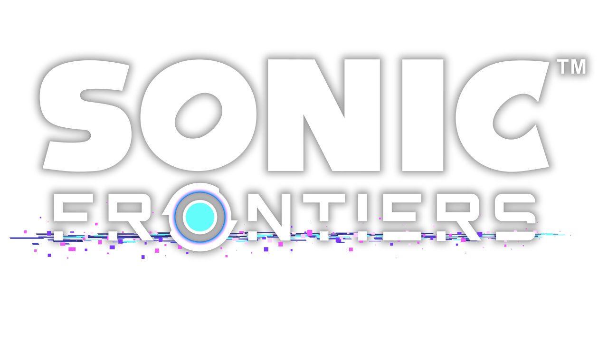

Sonic como você nunca viu antes! Sonic Frontiers revolucinou a franquia ao introduzir o formato de "Áreas abertas", com ilhas que possuiem diversos desafios e chefes que recompensa o jogador com itens para continuar a história.
O jogo te da a maior liberdade de controle e exploração da franquia, o que aumenta ainda mais com mods.
A controversia estreia da franquia nos consoles HDs, Sonic The Hedgehog (geralmente chamado de Sonic06) foi um jogo que foi lançado as pressas, com diversos bugs e problemas de otmização.
O jogo possui fases e ideias interessantes, que não foram apreciadas por causa dos problemas do jogo, porém recentemente um fã chamado de ChaosX2006 está criando um remake do jogo para computadores que consertar seus problemas.
O remake ainda não foi concluido porém grande parte das fases e personagens foi concluida.